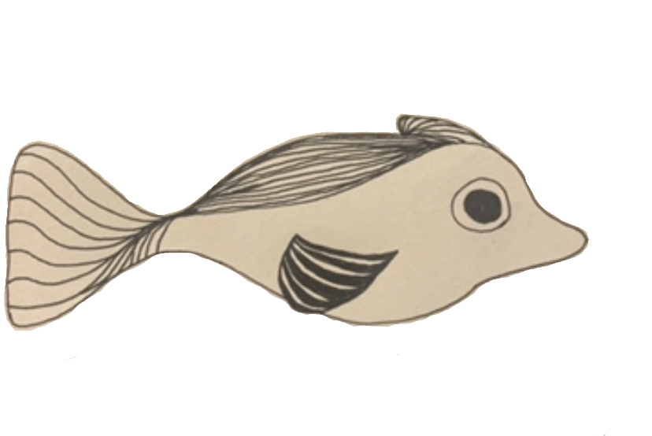
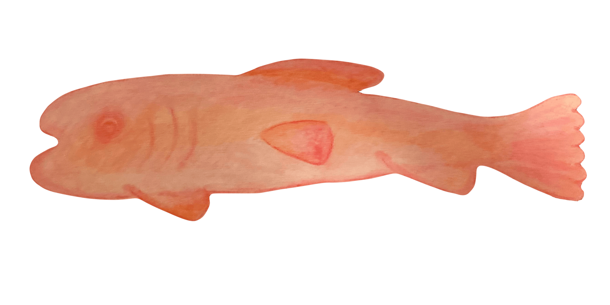
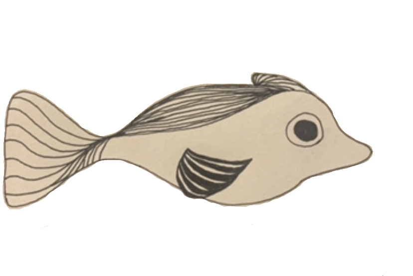
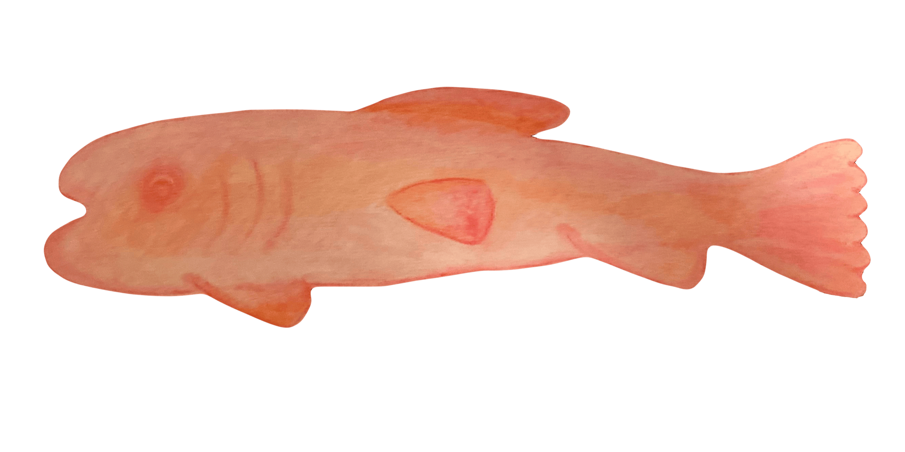

I walk in my new city. Feeling its unfamiliar cracks under my ballet flats. To work I go, a new routine. Strangers make their way with me across the bridge. I think about stopping a beautiful one, eager to have my presence known in this new place. Eager to be the kind of person who stops a stranger at 8:37 in the morning. But I’m scared. I feel unfamiliar. Who am I here? Who am I without my normal running route, without the Sunday farmers market, without the inconvenient train to downtown Los Angeles.
I used to know who I was. Reflections of other people. My sophomore year roommate’s habit of leaving kind notes, my mom’s anger, my high school peer’s love of early 2000s music, my best friend’s tendency towards aquatic motifs. I do that silly voice only because you do. I go to that kind of restaurant only because you do.
But now I’m alone. Trying to figure out what’s left without the mirrors I kept in my pocket. They’re empty now. I reach my hands inside when I’m around these strangers. Searching for a shiny surface that brings out a part of me (of you) I love. I find something small and perform physical comedy for my coworkers. It feels good. But maybe that’s only because I want to tell you about it later. I compliment a necklace and hold the door for someone far behind me. I feel bright, as if I can be me without you. As if what made you, make me, was really me the whole time.
But I return home. To empty walls. Empty because the things that used to make my room mine were that they related to you.
I try to figure out who I am alone. I buy a shirt I would feel embarrassed to wear in front of you. I go on a run without music to pretend to perform catharsis. I smile at one of these strangers. But I wonder what you would think of the shirt, imagine you jogging beside me, and want to notify you of my new-found bravery.
I suppose for now, I must keep performing these acts. Even if they feel foreign. Strange in my body without you next to me. I have to hope my pockets will again have the familiar weight of familiar friendship. That all this new will start to look like myself.
I want to be so open that there’s enough room for someone to fit inside perfectly. I want to move through the world as an empty box, waiting for you to crawl inside. I want to take everything you are and let it fill me up completely.
But before you arrive, I’ll walk around empty. Unsure what’s there, without you, to fill me up.
I want someone to wear my entire essence like a glove. I want to only be functional when you try me on. In the meantime, I’ll sit in the closet. Waiting an eternity for it to get cold enough for you to remember me.
But, I am not a glove. I am a human girl. And so I need to go through my day, limp and lifeless. Finding small gusts of wind to hold me up.
I carry my laptop in a faux-snake-skin purse. A few months ago it lived in the backpack I purchased before my freshman year of college. I switched to the bag in an effort to achieve a more grown-up look after graduating. A hand-me-down from an old friend. I traded in my back pain for a sore shoulder. It made me feel cool. Like I knew where I was going. And that I was used to being asymmetrical.
I hold this bag as I walk to work. It’s fabric wearing off like the falling leaves. I wonder if fellow-commuters can tell I’m new at purse-carrying. That my experience with a bag typically comes with a rounded spine. When I wear the purse on coffee dates and walks along the river, I want to tell my peer that this is new for me. That I’m making an effort to grow up. That, authentically, deep-down, at my core, I am a backpack-wearer. This is surely important for them to know. But I don’t mention it. And as we walk side by side, I move it over to my left shoulder so I don’t block our forming connection. I think I come across as someone who wears a bag. Perhaps my practice is paying off, or perhaps no one cares.
There’s a chill outside. The first Thursday it feels like fall. I had been waiting for the east-coast air to have that familiar smell. One I haven’t encountered in five years. My body feels sad. Am I reminded of lonely days in high school? Of a temperate west-coast January? Of how much has changed so suddenly?
Fall came late this year. Leaves clung to trees until they rotted off in the extreme September heat. Never having the chance to develop reds and oranges. Wilting straight from green to brown. Summer did not want to leave. She hung around so long that it felt like it might be that way forever. It felt like I’ll always have my best friend, a long Friday lunch, and a party to look forward to. So when this Thursday came, I still wasn’t ready to change. It felt like forgetting you and remembering who I am.
I walk home from work. I wonder if fall will ever agree with me. If I’ll be missing forever. I adjust my bag higher up on my arm. I hear my name from across the street. The two syllables ringing over the sound of 5:16 traffic. A new friend has recognized me. As if I am a person to be recognized in this new place. A grown-up kind of person with an uneven walk and a faux-snake-skin purse.